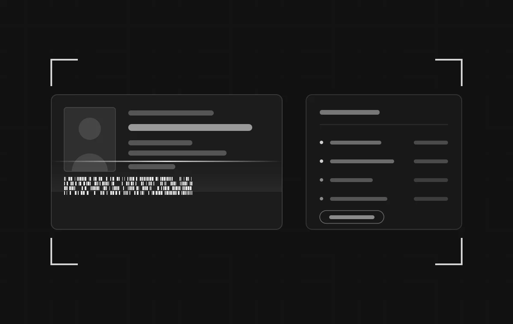
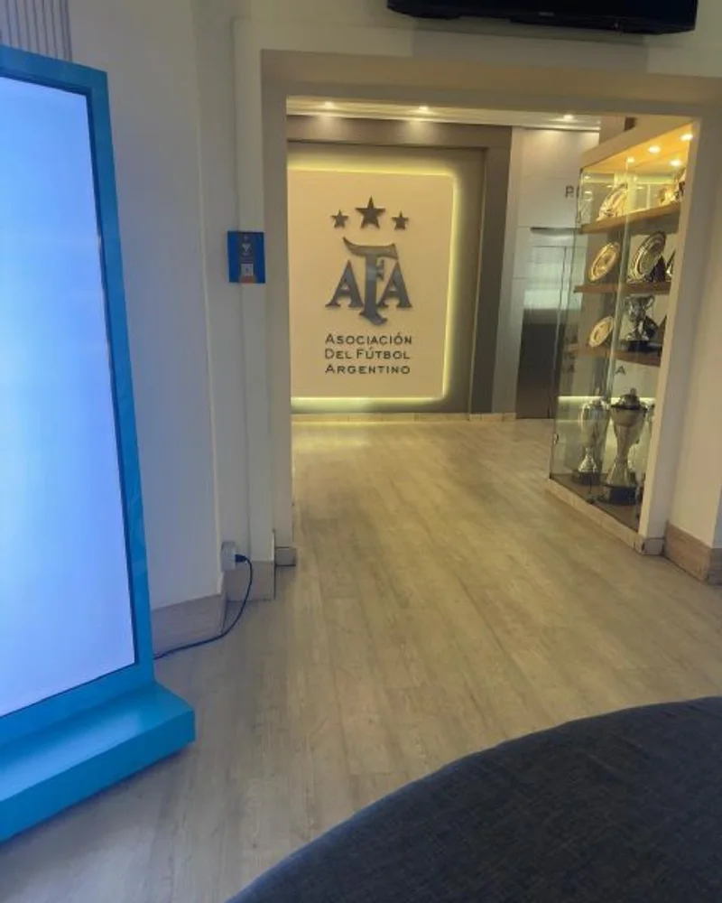

Asociación del Fútbol Argentino (AFA)
Abril a junio de 2025
Control de Acceso
por DNI
Un sistema para registrar el ingreso de personas a las oficinas de la Asociación del Fútbol Argentino escaneando el DNI, con todos los datos centralizados en un solo lugar.
- Cliente
- Asociación del Fútbol Argentino (AFA)
A través de Nimat Solutions - Período
- Abril a junio de 2025
- Mi rol
- Relevamiento, análisis funcional y desarrollo
- Equipo
- Proyecto individual, de punta a punta

01 La necesidad
El control de ingreso a las oficinas de la AFA se llevaba de forma manual. Eso hacía lento el paso de cada persona por la recepción y dejaba los datos dispersos, sin una forma práctica de consultarlos después.
El pedido fue concreto: agilizar el ingreso escaneando el DNI y centralizar los registros en un único sistema consultable.
02 Mi rol
Encaré el proyecto solo, de punta a punta. No recibí un pliego cerrado con los requerimientos: tuve que construirlos.
- Relevamiento. Reuniones presenciales en las oficinas de la AFA para entender cómo era el circuito de ingreso tal como funcionaba, y qué necesitaba cada persona involucrada.
- Análisis funcional. Traducir lo conversado a funcionalidades concretas, definir el alcance y ordenar las prioridades.
- Propuesta. Presentar la solución al cliente y ajustarla con su devolución antes de escribir código.
- Desarrollo. Construcción completa del sistema en Python, incluida la lectura del código PDF417 del documento.

03 Qué hace el sistema
- Escaneo automático del código PDF417 del DNI, sin carga manual de datos.
- Registro de entradas y salidas con fecha y hora.
- Historial de visitas por persona.
- Visualización de la foto del DNI al momento del ingreso.
- Captura de foto para visitantes que ingresan por primera vez.
- Exportación de los registros a Excel.
04 Stack
05 Resultado y aprendizajes
El sistema quedó desarrollado y funcionando. El cliente decidió no implementarlo.
Que no haya llegado a producción no le saca valor a lo que dejó. Fue la primera vez que encaré un proyecto institucional desde cero, sin nadie que me pasara los requerimientos ya masticados.
Lo que más me sirvió fue el trato directo con el cliente: sentarme en sus oficinas, mirar cómo trabajaban y hacer las preguntas correctas. Ahí aprendí que la parte difícil no es escribir el código, sino convertir una necesidad contada en palabras en una solución concreta. Es la forma en la que sigo trabajando hoy.